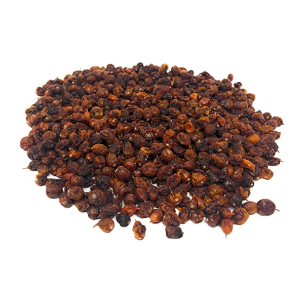

x
Az alábbi kupon felhasználásával 15% kedvezménnyel rendelheti meg bármelyik termékünket a webboltunkban!
25929
 Gratulálunk!
Gratulálunk!
Az alábbi kupon felhasználásával 15% kedvezménnyel rendelheti meg bármelyik termékünket a webboltunkban!
25929
A homoktövis eredetileg a Himalája lejtőin és főként Ázsiában termő növény, de ma már meghódította az egész világot. Magyarországon is találkozhatunk vele a Duna mentén, a Balaton partján vagy a Csepel-szigeten. Nálunk védett növény.




Csodanövény
E-vitamint és esszenciális zsírsavakat tartalmaz, melyek jó hatással vannak a kiszáradt, berepedezett bőrre. Májelégtelenség esetén jól hasznosul más gyógynövényekkel együtt, így például a pitypanggal. A homoktöviskéreg növeli az epe kiválasztást. Érdemes cikóriával vagy gyermekláncfűvel kombinálni annak érdekében, hogy gyógyító hatását növeljük. Csökkenti a narancsbőr kialakulását, hiszen erősíti a kötőszövetet.
Termését elsősorban nem nyersen, hanem feldolgozva használják, dzsem, bor, ivólé, likőr, gyümölcslé, kompót formájában. Leveléből erősítő hatású tea készíthető. C-vitamin-tartalma tízszerese a citrom C-vitamin-tartalmához képest. Ennek köszönhetően jól használható megfázás és köhögés esetén.
Gyógyászati célra a homoktövis termését, levelét és magolaját használják fel. Erősíti és védi az immunrendszert, elősegíti az általános jó közérzetet.
Termését elsősorban nem nyersen, hanem feldolgozva használják, dzsem, bor, ivólé, likőr, gyümölcslé, kompót formájában. Leveléből erősítő hatású tea készíthető. C-vitamin-tartalma tízszerese a citrom C-vitamin-tartalmához képest. Ennek köszönhetően jól használható megfázás és köhögés esetén.
Gyógyászati célra a homoktövis termését, levelét és magolaját használják fel. Erősíti és védi az immunrendszert, elősegíti az általános jó közérzetet.
Tudtad-e?
A homoktövist különböző festési célokra is használják, ugyanis vízzel átitatva sárga színt ad, amit festők, könyvkötők, bőr- és kézművesek használnak.
Ellenjavaslat
Nagy mennyiségben való fogyasztása - ahogyan a legtöbb gyógynövény esetében, a benne található aktív hatóanyagok következtében - nem ajánlott terhes nőknek és szoptató kismamáknak, illetve 12 év alatti gyermekeknek. Érdemes kis adagokban fogyasztani, hiszen egyes esetekben hasmenést okozhat. Akut bél- és epehólyaggyulladás, illetve hasnyálmirigy megbetegedések esetén használata nem ajánlatos.
Információk
Az oldal készítője: Varga Zsigmond
Az oldal forrása: megtekintéshez kattints ide!
Az oldal forrása: megtekintéshez kattints ide!